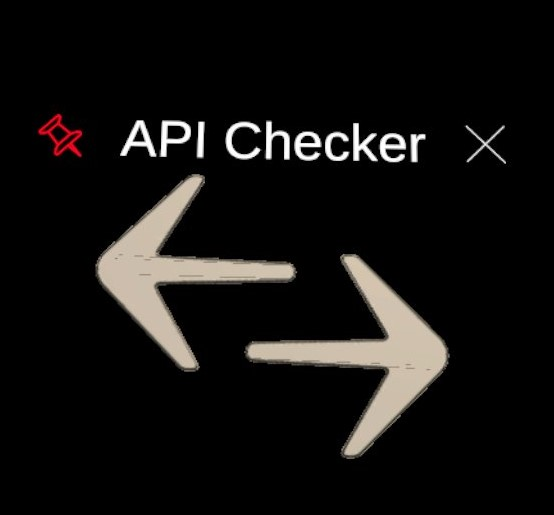
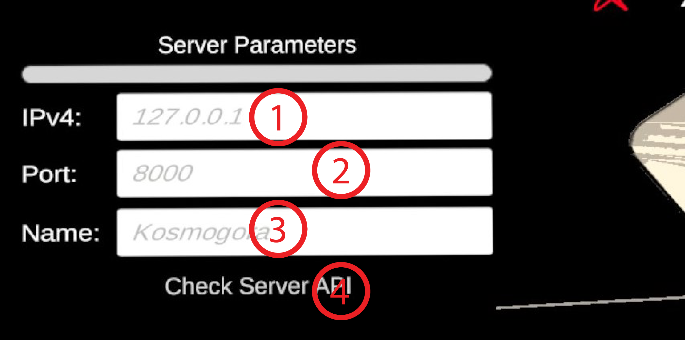

API Checker
Requires a Kosmogora server.
This is the module to check that a Kosmogora-like server implements the HTTP API requested for ever server action modules (the Remote Importer, Flux Balance Analysis, Modification Handler, and Reaction Info Query). If the server implements the API, the buttons to spawn the modules in the Modules Menu in the scene will be activated.
The Server Parameters pannel:
- Input Field IPv4. The IP address at which Kosmogora is hosted. Default value is 127.0.0.1 but this only works during development if Kosmogora is hosted on the same machine as the one we are developing ECellDive on.
- Input Field Port. The Port at which Kosmogora is listening. Default value is 8000. This is also the default value when launching Kosmogora so, unless you specified a port at that time, you can leave the field empty in ECellDive.
- Input Field Name. The name this server will be displayed with in the rest of ECellDive when using modules that can connect to this server.
- Button Check API. Will send an http request called
/apisto retrieve the list of the names of the commands that theKosmogora-likeserver implements. Then, it will compare the http commands used by every module in ECellDive and allow users to use such module if the server implements them all.
Demonstration
Here is a recording of inputting the IPv4 address of a Kosmogora instance running on the same Local Area Network as the headset is connected to.
You see on the left side, at the beginning, that some Module's buttons are gray to indicate that they are not accessible. Then, after the API Checker connects to the Kosmogora instance at address 192.168.0.174:8000, the buttons have the default color and can be pressed.